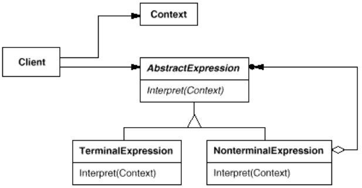

Si plusieurs problèmes voisins peuvent s'exprimer par des phrases d'un langage simple, on peut construire un interpréteur qui résoud les problèmes en interprétant ces phrases.
Le pattern Interpreter indique comment définir une grammaire d'un langage simple, comment représenter et interpréter les phrases de ce langage.
L'interpréteur utilise une structure arborescente pour représenter les phrases du langage, appelée AST (Abtract Syntax Tree).
Le pattern Interpreter indique comment définir une grammaire d'un langage simple, comment représenter et interpréter les phrases de ce langage.
Par exemple,
myvar = (134 + 265) * 3;est représenté par :
=
/ \
myvar *
/ \
+ 3
/ \
134 265
L'AST est fourni par le parsing, qui part du code source (String[]) et isole les tokens (jetons), petites chaînes représentant les éléments syntaxiques du langage ; les tokens sont ensuite organisés en arbres syntatxiques concrets (parse tree), eux mêmes convertis en AST.
AST : Abstract car dépouillé d'une partie des jetons : accolades, parenthèses, point-virgules etc.
Exemple
On prend un langage très simple permettant d'écrire en français les additions et multiplications entre les entiers de 1 à 9.Les phrases sont du type :
trois plus deux
six fois sept
Ecrire un programme qui donne le résultat numérique de l'opération exprimée par une phrase.
Sans pattern
On pourrait répondre à la question avec ce genre de code :
/**
@param str Phrase à interpréter, par exemple "cinq plus deux";
**/
public static int interpret(String str){
switch(str){
case "un plus un" : return 2; break;
case "un plus deux" : return 3; break;
case "deux plus un" : return 3; break;
// ...
case "neuf plus neuf" : return 18; break;
// ...
case "un fois un" : return 1; break;
case "un fois deux" : return 2; break;
case "deux fois un" : return 2; break;
// ...
case "neuf fois neuf" : return 81; break;
}
}
Avec pattern
(code dans UnPlusUn.java)1 - Description de la grammaire
Notre langage contient neuf nombres écrit en lettres, de "un" à "neuf", et deux opérations, "plus" et "fois".La grammaire est :
operation ::= 'plus' | 'fois'
nombre ::= 'un'|'deux'| ... |'neuf'
expression ::= nombre operation nombre
2 - Traduction de la grammaire
Dans le pattern Interpreter,- Chaque règle de grammaire est représentée par une classe.
- Toutes les règles implémentent ou dérivent d'une Règle Abstraite, qui contient une méthode
interpret().
// === Expression abstraite ===
interface AbstractExpression {
public int interpret();
}
// === Expressions composées ===
abstract class BinaryExpression implements AbstractExpression {
protected AbstractExpression exp1, exp2;
public BinaryExpression(AbstractExpression exp1, AbstractExpression exp2){
this.exp1 = exp1;
this.exp2 = exp2;
}
}
class Plus extends BinaryExpression {
public Plus(AbstractExpression exp1, AbstractExpression exp2){
super(exp1, exp2);
}
public int interpret() {
return exp1.interpret() + exp2.interpret();
}
}
class Fois extends BinaryExpression {
public Fois(AbstractExpression exp1, AbstractExpression exp2){
super(exp1, exp2);
}
public int interpret() {
return exp1.interpret() * exp2.interpret();
}
}
// === Expressions terminales ===
class Nb implements AbstractExpression{
private int value;
public Nb(String str) throws IllegalExpressionException{
switch(str){
case "un" : value = 1; break;
case "deux" : value = 2; break;
case "trois" : value = 3; break;
case "quatre" : value = 4; break;
case "cinq" : value = 5; break;
case "six" : value = 6; break;
case "sept" : value = 7; break;
case "huit" : value = 8; break;
case "neuf" : value = 9; break;
default:
throw new IllegalExpressionException("Illegal number string : " + str);
}
}
public int interpret() {
return value;
}
}
3 - Utilisation
public class UnPlusUn{
public static void main(String[] args) {
//String str = "neuf plus quatre";
String str = "quatre fois huit";
try{
AbstractExpression exp = parse(str);
System.out.println(str + " = " + exp.interpret());
}
catch(IllegalExpressionException e){
e.printStackTrace();
}
}
/**
Méthode auxiliaire, qui effectue le parsing
Transforme une chaîne en AST
Etape antérieure à l'interprétation, ne fait pas partie du pattern Interpreter
**/
static AbstractExpression parse(String str) throws IllegalExpressionException{
String[] parts = str.split(" ");
if(parts.length != 3){
throw new IllegalExpressionException("Illegal expression : " + str);
}
AbstractExpression e1 = new Nb(parts[0]);
AbstractExpression e2 = new Nb(parts[2]);
AbstractExpression operation = null;
switch(parts[1]){
case "fois" : operation = new Fois(e1, e2); break;
case "plus" : operation = new Plus(e1, e2); break;
default: throw new IllegalExpressionException(
"Illegal expression '" + str + "' : '" + parts[1] + "' n'est pas un opérateur valable"
);
}
return operation;
}
}
class IllegalExpressionException extends Exception{
public IllegalExpressionException(String msg){
super(msg);
}
}
Structure
- Chaque règle de grammaire est représentée par une classe.
-
Toutes les règles implémentent ou dérivent d'une Règle Abstraite, qui contient une méthode
interpret()(parfois appeléeexecute()). -
Les expression composées contiennent leurs sous-expressions dans des variables d'instance.
L'implémentation deinterpret()d'une expression composée contient nécessairement l'appel àinterpret()des sous-expressions.
Fonctionnement récursif. -
Le contexte est initialisé par le client. Il contient des informations globales à l'interpréteur. Chaque opération
interpret()peut stocker ou récupérer de l'information.
Remarques
- Ce pattern est bien adapté pour des langages simples. Si la grammaire est trop complexe, la hiérarchie des classes devient difficile à gérer.
- Ce pattern ne répond qu'à une partie du problème ; le client a la charge de fabriquer l'AST, donc de parser le texte.
-
Interpreter est similaire à Composite : structure arborescente, méthode récursive ;
interpret()dans Interpreter correspond à la méthodeoperation()de Composite.
Mais les méthodesaddChild()etc. ne sont pas présentes dans Interpreter ; elles sont remplacées par les paramètres passés aux constructeurs des noeuds (sous-classes deAbstractExpression). Cela est justifié par le fait qu'uneAbstractExpressiondonnée ne contient qu'un nombre d'enfants bien défini, contrairement au cas général d'un composite. - Si on veut implémenter plusieurs manières d'interpréter (pretty printing, métrique sur le code...), on peut aussi utiliser Visitor.
- Pour des langages plus compliqués, on utilise des générateurs de parser (comme Bison ou Yacc).
Exercice : Exemple UnPlusUn modifié